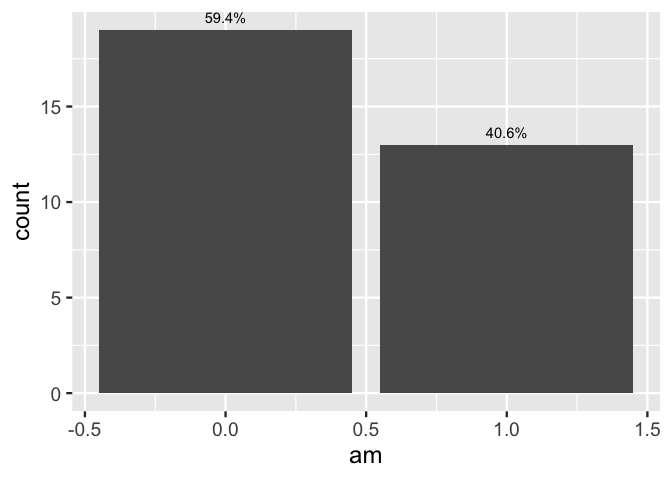

- ggdirect (likely to be superceded by ggbarlabs)
- Problem:
- Furthermore, a different set of thematic and scale defaults make sense for labeled bar charts
-
lets put all of this in
ggbarlabs()

Problem:
bar charts are ubiquitous and can quickly communicate information.
p <- last_plot()bar plots can benefit from specificity of labeling
Labeled bar chart is all the fast communication of traditional data vizualization with all the specificity of a table.
or use verbose after_stat…
first inspecting bar layer (stat_count)
layer_data(last_plot(), 1)
#> y count prop x flipped_aes PANEL group ymin ymax xmin xmax colour fill
#> 1 19 19 0.59375 0 FALSE 1 -1 0 19 -0.45 0.45 NA grey35
#> 2 13 13 0.40625 1 FALSE 1 -1 0 13 0.55 1.45 NA grey35
#> linewidth linetype alpha
#> 1 0.5 1 NA
#> 2 0.5 1 NAthen plot
using our knowledge of what data frame results when using StatCount, refer to the computed var, count
# count column can be used via after_stat
p +
geom_text(stat = StatCount,
aes(label = after_stat(count)),
vjust = -.7)
p +
geom_text(stat = StatCount,
aes(label = after_stat(
paste0(round(100*count/sum(count), 1) ,"%")
)),
vjust = -.7)
p +
geom_text(stat = StatCount,
aes(label = after_stat(
paste0(count,"\n(",round(100*count/sum(count), 1) ,"%)")
)),
vjust = -.5, lineheight = .8)
layer_data(last_plot(), 2)
#> label y count prop x width flipped_aes PANEL group colour size
#> 1 19\n(59.4%) 19 19 0.59375 0 0.9 FALSE 1 -1 black 3.88
#> 2 13\n(40.6%) 13 13 0.40625 1 0.9 FALSE 1 -1 black 3.88
#> angle hjust vjust alpha family fontface lineheight
#> 1 0 0.5 -0.5 NA 1 0.8
#> 2 0 0.5 -0.5 NA 1 0.8Composing functions
geom_text_count
#' geom_text_count
#' @description Add label which is the count. Acts like geom_bar() but text label at the position of the top of the bar.
#'
#' @param nudge_y
#' @param position
#' @param ...
#'
#' @return
#' @export
#'
#' @examples
#' library(ggplot2)
#' ggplot(mtcars) +
#' aes(x = cyl) +
#' geom_bar() +
#' geom_text_count(nudge_y = .5)
geom_text_count <- function(nudge_y = 0, position =
ggplot2::position_dodge2(width = .9,
preserve = "single"), ...){
ggplot2::stat_count(geom = "text",
ggplot2::aes(label = ggplot2::after_stat(count),
y = ggplot2::after_stat(count) + nudge_y),
vjust = 0,
position = position,
...
)
}Try it out
library(ggplot2)
ggplot(mtcars) +
aes(x = factor(cyl)) +
geom_bar(position = "dodge") +
geom_text_count(nudge_y = .2)

geom_text_count_percent
#' geom_text_count_percent
#' @description Add label which is the count as well as percentage. Acts like geom_bar() but text label at the position of the top of the bar. Percentage is calculated within facet panels.
#'
#' @param nudge_y
#' @param lineheight
#' @param position
#' @param ...
#'
#' @return
#' @export
#'
#' @examples
#' library(ggplot2)
#' ggplot(mtcars) +
#' aes(x = cyl) +
#' geom_bar() +
#' geom_text_count_percent(nudge_y = .5)
geom_text_count_percent <- function(nudge_y = 0,
lineheight = .85,
position = ggplot2::position_dodge2(width = .9,
preserve = "single"), ...){
stat_count(geom = "text",
ggplot2::aes(label = paste0(after_stat(count), "\n(",
round(
100*(ggplot2::after_stat(count))/
tapply(ggplot2::after_stat(count),
..PANEL..,
sum)[..PANEL..],
1), "%)" ),
y = ggplot2::after_stat(count) + nudge_y),
vjust = 0,
lineheight = lineheight,
position = position,
...
)
}Try it out
library(ggplot2)
ggplot(mtcars) +
aes(x = factor(cyl)) +
geom_bar(position = "dodge") +
geom_text_count_percent(nudge_y = .25)
#> Warning: The dot-dot notation (`..PANEL..`) was deprecated in ggplot2 3.4.0.
#> ℹ Please use `after_stat(PANEL)` instead.
#> This warning is displayed once every 8 hours.
#> Call `lifecycle::last_lifecycle_warnings()` to see where this warning was
#> generated.
Furthermore, a different set of thematic and scale defaults make sense for labeled bar charts
ggplot(mtcars) +
aes(x = factor(cyl)) +
geom_bar(position = "dodge") +
geom_text_count(nudge_y = .2) +
theme_classic() +
theme(axis.line.y = element_blank(),
axis.text.y.right = element_blank(),
axis.ticks.y = element_blank(),
axis.title.y = element_blank(),
axis.text.y = element_blank(),
panel.grid.major.y = element_line(color = alpha("gray35", .25)),
panel.grid.major.x = element_blank(),
panel.grid.minor.x = element_blank(),
axis.line.x = element_line(colour = "gray35"),
legend.position = "top",
legend.justification = 0) +
scale_y_continuous(expand = expansion(mult = c(0, .1)))lets put all of this in ggbarlabs()
ggbarlabs <- function(data = NULL, ...){
ggplot(data= data , ... ) +
theme_classic(base_size = 15) +
theme(axis.line.y = element_blank(),
axis.text.y.right = element_blank(),
axis.ticks.y = element_blank(),
axis.title.y = element_blank(),
axis.text.y = element_blank(),
panel.grid.major.y = element_line(color = alpha("gray35", .25)),
panel.grid.major.x = element_blank(),
panel.grid.minor.x = element_blank(),
axis.line.x = element_line(colour = "gray35"),
legend.position = "top",
legend.justification = 0) +
scale_y_continuous(expand = expansion(mult = c(0, .15)))
}try it out
ggbarlabs(mtcars) +
aes(x = factor(am)) +
geom_bar(fill = alpha("navy", .9)) +
geom_text_count_percent()
ggbarlabs(mtcars) +
aes(x = factor(am), fill = factor(cyl)) +
geom_bar(position = "dodge") +
geom_text_count_percent()